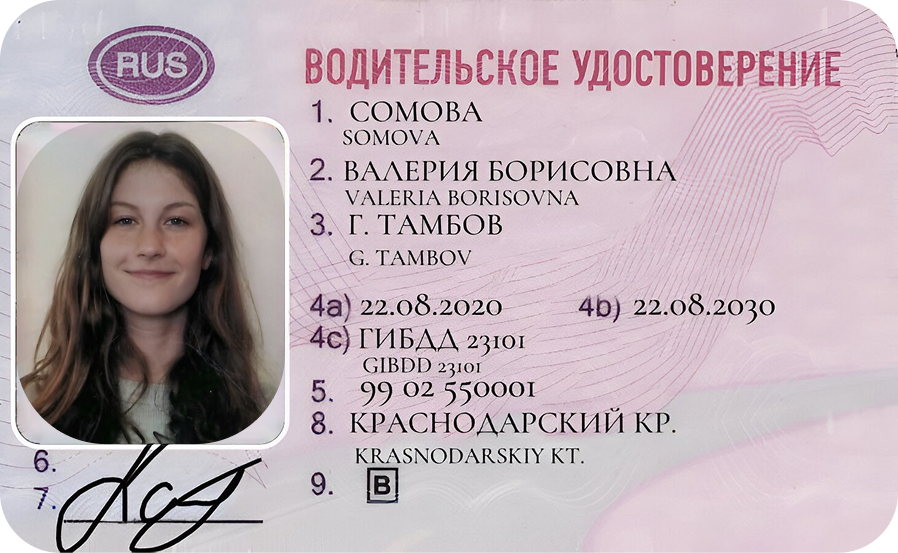
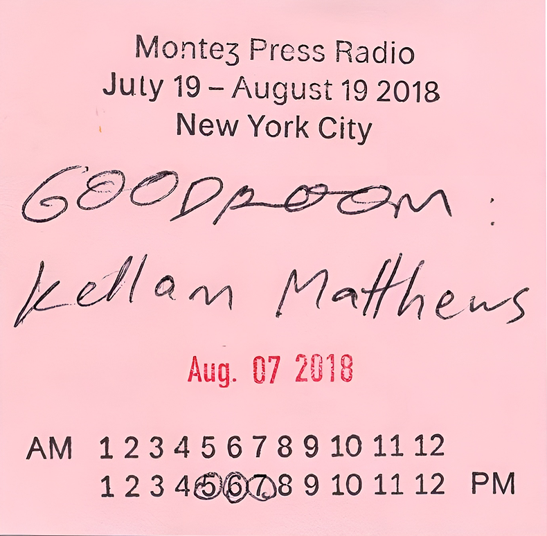
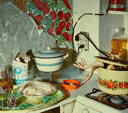

Этот сертификат — результат месяцев подготовки. 23 января 2021 года
она сдавала IELTS, переживала перед экзаменом, перечитывала учебные
материалы и пыталась запомнить как можно больше полезных фраз.
Баллы хорошие: Listening — лучший результат, Speaking тоже
уверенный, но вот Reading немного подвёл. Возможно, на экзамене
попался сложный текст, или просто нервы взяли своё.
Теперь с этим сертификатом у неё открыты новые возможности:
поступление в университет, работа за границей, переезд? Или, может,
он так и остался лежать в папке, как напоминание о сложном,
но важном этапе жизни?

Выданное в 2020 году, в разгар перемен в её жизни. Она родилась
в Тамбове, но документы оформлены в Краснодарском крае — значит,
переезд? Временная остановка? Или просто удобный экзаменационный
центр?
На фото — лёгкая улыбка, уверенный взгляд. С тех пор прошло
несколько лет. Где сейчас её права? Лежат без дела в кошельке,
потому что она больше передвигается на метро? Или наоборот — они
всегда под рукой, ведь дороги стали её второй стихией?
Карточка лежала среди её вещей, но она не помнила, когда взяла её.
Подпись внизу была её, но строка с названием книги расплывалась,
будто напечатанная на сломанной машинке.
Она посмотрела на дату — слишком давно. Почему она не вернула книгу?
Или её никогда не было? В голове вспыхнуло смутное воспоминание:
тихая библиотека, запах старых страниц, чья‑то рука, передающая
ей книгу без слов.
Но что это была за книга, и почему она исчезла из памяти?
Старая потрёпанная книжка с коллекцией редких марок — вещь, явно
имеющая для неё особое значение. Каждая марка аккуратно вклеена,
будто собрана годами, возможно, передана по наследству. Они
из разных стран, некоторые с потёртыми краями, другие — яркие, как
будто куплены недавно.
На левой странице — её фотография, но зачем? Может, это не просто
коллекция, а что‑то большее: напоминание о путешествиях, о семье или
даже об утраченной мечте?

Этот клочок бумаги — напоминание о дне, когда она впервые оказалась
в Нью-Йорке в качестве приглашённого гостя на независимой
радиостанции Montez Press Radio. Август 2018 года, знойный вечер,
прохладный воздух студии. Она сидела напротив Kellam Matthews,
обсуждая искусство, культуру и жизнь за границей.
Карандашные отметки на часах — её время выхода в эфир. Что она тогда
говорила? Были ли её слова спонтанны или давно продуманы? Остался ли
у неё записанный эфир на память?
Когда‑то этот документ был ключом к путешествиям, новой жизни,
переменам. Теперь же он исписан, закрашен и почти неузнаваем.
Почему? Она аннулировала его? Или просто злилась на свою
прошлую жизнь?
Дата выдачи: 2016 год. С тех пор многое изменилось. Где она была
в момент, когда этот паспорт стал бесполезен? Возможно, где‑то рядом
есть новый документ — но уже не российский?‥
Телефон упал с её рук в тот вечер, когда она не знала, что сказать.
Экран разлетелся на тысячи трещин, но она не подняла его сразу —
просто смотрела, как в разбитой поверхности отражается
её собственное лицо.
С тех пор он лежал в ящике, мёртвый и бесполезный, но выбросить его
она так и не смогла. Там всё ещё были старые сообщения, фотографии,
голосовые записи, которые больше нельзя было открыть. Всё, что
когда‑то казалось важным, теперь было скрыто за слоем треснувшего
стекла.
Она думала починить его, но каждый раз откладывала. Может, потому
что боялась того, что найдёт внутри.
Они сделали эти браслеты вместе в один из тех вечеров, когда время
пролетает незаметно. Сидели на полу, перебирая бусины, смеялись,
спорили, какой порядок цветов выбрать.
— В этот раз мы знаем друг друга, — сказал кто‑то, нанизывая
последние буквы.
Она носила этот браслет какое‑то время, а потом он случайно
затерялся среди вещей. Но когда она снова нашла его, воспоминания
о той тёплой ночи сразу вернулись.
Когда она нашла эту карту, она была чуть выцветшей, с потёртыми
углами — как будто пережила не одну историю. Её дед когда‑то таскал
колоду в кармане пальто, но именно этот туз всегда лежал отдельно,
в кошельке, рядом с фотографией бабушки. Он называл его своим
«талисманом», но никогда не рассказывал почему.
Позже, уже после его смерти, мама призналась: туз червей был первой
запиской, которую бабушка подложила ему в книжку вместо письма — они
ещё учились тогда. Просто карта. Просто сердце. Теперь этот символ
остался у неё — немного на удачу, немного на память, немного — чтобы
не забывать, как выглядят простые знаки любви.
Она пыталась склеить его, словно можно было вернуть время назад.
Цветок когда‑то был подарком — сорван в спешке, протянут с улыбкой.
Она хотела сохранить его, но со временем лепестки начали осыпаться.
Тогда она осторожно скрепила их кусочками прозрачного скотча,
как будто это могло остановить увядание.
Теперь он лежал перед ней — хрупкий, потрёпанный, но всё ещё целый.
И она не знала, что важнее: сам цветок или её попытки его удержать.
Этот медальон передавался в её семье из поколения в поколение.
Бабушка рассказывала, что когда‑то он принадлежал женщине, которая
ждала своего любимого с войны. Она прятала в нём его маленькую
фотографию и письмо, написанное мельчайшим почерком.
Когда медальон перешёл к ней, внутри уже не было ни фото,
ни письма — только царапины на внутренней стороне, оставленные
временем. Но даже пустым он хранил в себе истории тех, кто носил его
раньше.
Она не знала, кому передаст его дальше. Пока что он оставался с ней,
как напоминание о прошлом, которое не хотелось забывать.
Она крутила связку ключей в руках, пытаясь вспомнить, какой из них
больше не нужен. Один открывал квартиру, другой — почтовый ящик,
третий... Она остановилась.
Этот ключ был от двери, в которую она больше не собиралась стучать.
Она долго носила его с собой, не решаясь выбросить. Но теперь просто
повесила обратно на крючок — пусть полежит ещё немного.
Этот кусочек карты она вырвала случайно — из старого атласа, который
нашла в библиотеке деда. Ей нравилось, как облупились края, будто
карта уже побывала в путешествии. Она не искала конкретного места —
скорее, состояния. Такого, где ты можешь быть в пути, не зная, куда
ведёт дорога.
Она хранила его в блокноте, как напоминание о том, что направление —
не всегда координаты, а часто просто внутренний компас. Иногда она
мысленно водила пальцем по этим линиям и придумывала страны, которых
не было. Эта карта ничего не объясняла, но всегда предлагала
движение поиска.
Она нашла эти фотографии в коробке с ненужными вещами. Когда‑то они
были важными, но теперь просто лежали, забытые. Резинка,
перетянувшая стопку, немного растрескалась — как и воспоминания,
которые они хранили.
На верхнем снимке — вулкан, выбрасывающий в небо тучи пепла. Она
вспомнила, как кто‑то говорил ей, что извержение можно увидеть
за километры, но громкий рёв земли невозможно почувствовать
на расстоянии.
Она покрутила свёрток в руках, думая, стоит ли посмотреть остальные
снимки. Или просто оставить их связанными, чтобы прошлое
не вырвалось наружу, как этот вулкан.
Она сидела у окна автобуса, перекатывая билетик между пальцами.
Вечерний город мелькал за стеклом — огни витрин, редкие прохожие,
мокрый асфальт после дождя.
Этот билет был последним в её рулоне. Она всегда брала их пачкой,
чтобы не думать о мелочи в кармане. А теперь — вот он, последний.
Когда автобус остановился, она вышла и спрятала билет в карман.
Просто так. Тогда ей казалось, что это не имеет значения.
Но годы спустя, найдя его снова, она поняла, что помнит тот вечер
до мельчайших деталей.
Этот мятый клочок — из тех, что передавали по классу, прятали
в пеналах и писали между уроками. Она не помнит, кто начал, но точно
знает, как хотелось, чтобы рядом с её именем стояла галочка. Тут
не было ни заголовков, ни подписей — только детская логика:
«ты мне — я тебе», «а ты?», «за» или «нет». Бумага быстро мялась
от рук, но почему‑то не теряла значения — в этих галочках было
больше, чем просто игра.
Позже она нашла этот листок в старой коробке — со смешанным чувством
стыда и тепла. Тогда казалось, что от такой галочки может зависеть
всё: дружба, настроение, ощущение нужности. Сейчас — это просто
трогательное напоминание о времени, когда всё решалось на бумаге.
Она тогда только переехала — всё было незнакомым: город, ритм, даже
станции метро звучали иначе. В этот день она пришла на платформу
немного раньше обычного, без спешки, просто наблюдала. Сделала
снимок — как будто хотела зафиксировать момент, когда одиночество
ещё не пугает, а просто есть. В руке — тяжёлый рюкзак, в голове —
мысли, что всё начинается заново.
Эта фотография — не про поезд, а про ощущение на границе. На границе
между прошлым, которое только что отпустила, и будущим, которое ещё
не наступило. В этой паузе, среди бетона, рельсов и приглушённого
света, она позволила себе ничего не делать — просто стоять и дышать.
Она ехала в поезде почти без слов. За окном — размытые деревья,
провода, поля, которые она когда‑то знала наизусть. Всё знакомое
пролетало мимо, как будто в последний раз. Это была дорога из дома,
но не в новое место — скорее в неизвестность. Решение было принято
давно, но только сейчас оно стало по‑настоящему ощутимым. Она сидела
у окна, сжимая в руках камеру, и сделала этот снимок — почти
машинально, не думая.
Этот кадр — не про пейзаж. Это момент тишины перед переменой.
Внутри — тревога, возбуждение, сожаление, свобода. Полароид вышел
немного смазанным, но именно в этой нерезкости — суть.
Летний дождь
Море
мама
мультик
Родители
Школа
Первая любовь
звезды
москва
открытка
Летний дождь
Море
мама
мультик
Родители
Школа
Первая любовь
звезды
москва
открытка
Летний дождь
Море
мама
мультик
Родители
Школа
Первая любовь
звезды
москва
открытка
Летний дождь
Море
мама
мультик
Родители
Школа
Первая любовь
звезды
москва
открытка
Море
мама
мультик
Родители
Школа
Первая любовь
звезды
москва
Море
мама
мультик
Родители
Школа
Первая любовь
звезды
москва
открытка
Летний дождь
открытка
привет
10
открыть
завесу
12
15
11
чужой
13
14
тайны
16
17
18
19

здесь
застыло
время